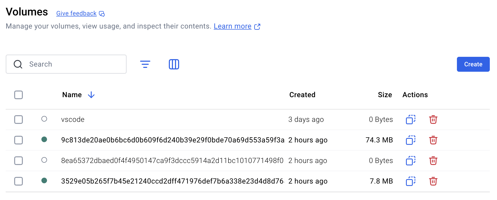
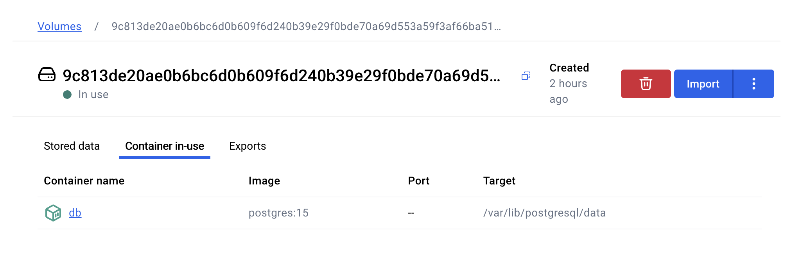

Installing Odoo with Docker
Prerequisites
- Docker Desktop (includes Docker CLI)
Installation Proper
1) Install and run a PostgresSQL container:
docker run -d -e POSTGRES_USER=odoo -e POSTGRES_PASSWORD=odoo -e POSTGRES_DB=postgres --name db postgres:15
2) Install and run an Odoo instance and make sure to have the tag as -t odoo:16.0 with an appended :16.0 (for projects that require a specific version of Odoo to be developed on):
docker run -p 8069:8069 --name odoo --link db:db -t odoo:16.0
3) Visit 127.0.0.1:8089 or whichever local IP was assigned with port number 8069
Docker Crash Course
Start and Stop an Instance/Container
Above, we set up an Odoo container with the tag odoo:16.0, hence the name of the container we made is odoo
docker stop odoo
docker start -a odoo
Delete a Container
Should you wish to delete the odoo container if you run to an error that an already existing container with the odoo name already taken, get its container ID with
docker ps -a
A sample output would be:
CONTAINER ID IMAGE COMMAND CREATED STATUS PORTS NAMES
ef3535b3afe3 da2782e8f015 "/bin/sh -c 'echo Co…" 2 hours ago Exited (0) 2 hours ago cranky_haslett
7d0d5b20d3d0 odoo:16.0 "/entrypoint.sh odoo" 2 hours ago Up 2 hours 0.0.0.0:8069->8069/tcp, 8071-8072/tcp odoo
93ca78717132 postgres:15 "docker-entrypoint.s…" 2 hours ago Up 2 hours 5432/tcp db
In this case, 7d0d5b20d3d0 is the container ID of the Odoo instance, which is indicative of the image used, odoo:16.0.
Stop the container, then delete it:
docker rm 7d0d5b20d3d0
Delete a Volume
In Installation Proper, we executed docker run for both PostgreSQL and Odoo, which created two volumes with arbitrary names, as the case here in this sample screenshot in Docker Desktop.

To verify which volume point to which container, for example in Docker Desktop, click on a volume then Container-in-use tab. In this example, this volume with a starting id of 9c813de is the volume for our PostgreSQL container.

In Docker Desktop, you can drop the Postgre database and/or delete the entire Odoo instance by clicking on the red Trash icon, either from Volumes tab or the view of the container itself.